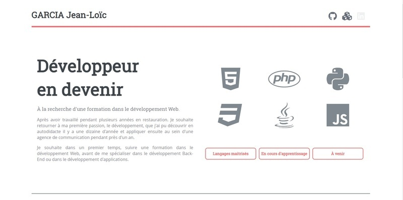

Site de Présentation
Le Site de présentation a été réalisé dans le cadre du test de positionnement pour intégrer la formation de développeur Web d'Openclassrooms, mais il me servira aussi de support pour présenter les différents projets que je réaliserais au cours de ma formation et plus généralement lors de mon parcours professionnel. Vous pouvez découvrir le Site de présentation et le lien vers le le projet sur GitHub
J'ai choisi editorial, un template trouvé sur le site HTML5Up, comme base pour le design. Je cherchais un visuel simple et épuré afin de mettre l'accent sur le contenu plutôt que sur le visuel. J'ai dû modifier certains éléments, notamment pour les petits écrans, pour l'adapter à mes besoins.
Le site se décompose en 3 parties : présentation, compétences et réalisations. J'ai fait le choix de fixer le menu à gauche pour permettre de faciliter la navigation, ce que le template d'origine ne proposait pas. Pour les petites tailles d'écrans, le menu vient se positionner en haut du site, permettant de gagner de la place.
J'ai intégré dans la partie présentation des icones représentant certains langages importants dans le développement avec une petite animation pour ajouter un peu de dynamisme.
Il est à noter qu'à l'origine, j'avais réalisé cette fonctionnalité en HTML5/CSS3. Je savais que le langage le plus adapté dans cette situation était le javaScript, mais je ne savais pas dans quelle mesure je pouvais utiliser du JavaScript dans le cadre d'un test de positionnement basé sur MOOC traitant du HTML5/CSS.
J'ai fini par décider de chercher une solution en JavaScript. Malgré tout la première solution est fonctionnelle et bien qu'elle soit valide W3C, on ne peut pas dire qu'elle soit très"propre".
Le template que j'ai choisi utilise le site fontawesome pour gérer les icones. Ne connaissant pas le système, j'ai choisi de l'utiliser pour découvrir son fonctionnement et bénéficier de sa base de données d'icones.
Le responsive design étant primordial aujourd'hui j'ai porté une attention particulière à l'optimisation pour les différentes tailles d'écrans.
En effet, certains éléments changent selon la taille de l'écran de l'utilisateur, notamment dans la partie "réalisations" :
- Déplacement de la zone de menu et de contact
- Réorganisation des différents éléments
- Réduction du nombre d'éléments affichés
- Disparition de certains éléments.
Le site reste simple, mais l'objectif est de l'enrichir au fur et à mesure de mon apprentissage.